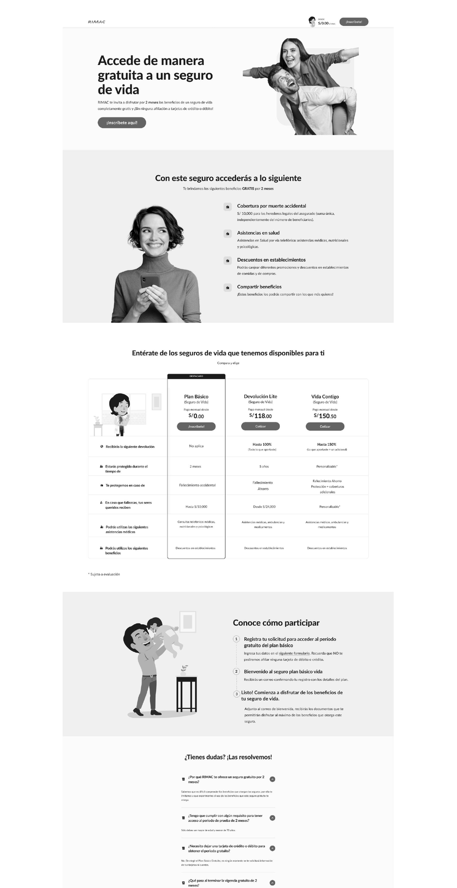
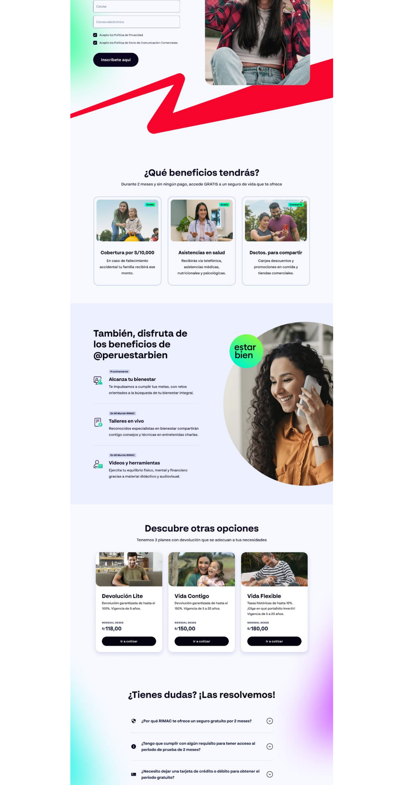

¿Cómo empezó?How did it start?
El proyecto tenía como finalidad dar una muestra freemium de un seguro de vida para captar un nuevo público: usuarios jóvenes que nunca habían tenido un seguro.
The project aimed to offer a freemium sample of life insurance to acquire a new audience: young users who had never had insurance.
Objetivo: captación de nuevos clientes.
Goal: new customer acquisition.
La propuesta finalThe final proposal
Una landing atrayente para los nuevos usuarios (jóvenes) que necesitan probar por primera vez un seguro.
An attractive landing for new (young) users who need to try insurance for the first time.
01
Creación de la landingCreating the landing
Diseñé un prototipo en baja fidelidad usando el design system del propio RIMAC y lo testeé con usuarios para mejorarlo. La primera versión presentaba el acceso gratuito al seguro, los beneficios y los planes disponibles, y un paso a paso de cómo participar.
I designed a low-fidelity prototype using RIMAC's own design system and tested it with users to improve it. The first version presented the free access to insurance, the benefits and available plans, and a step-by-step of how to participate.
02
Nueva imagen y 2ª versiónNew brand image and 2nd version
El feedback fue positivo, con cambios clave: un formulario directo al inicio (más dinámico) y beneficios más claros e ilustrados. Cabe resaltar que esta fue la primera landing con la nueva imagen de RIMAC (colores y tipografía que recién salían al mercado), gracias al apoyo de los UI designers y el equipo de design system.
Feedback was positive, with key changes: a form right at the top (more dynamic) and clearer, illustrated benefits. Notably, this was the first landing with RIMAC's new brand image (colors and typography just launching), thanks to the UI designers and design system team.
Comparativa de landingsLanding comparison
1ª versiónversion

Acceso gratuito, beneficios y planes; con el paso a paso de cómo participar.Free access, benefits and plans; with the step-by-step on how to participate.
2ª versiónversion

Formulario al inicio, beneficios ilustrados y la nueva imagen de marca de RIMAC.Form at the top, illustrated benefits and RIMAC's new brand image.